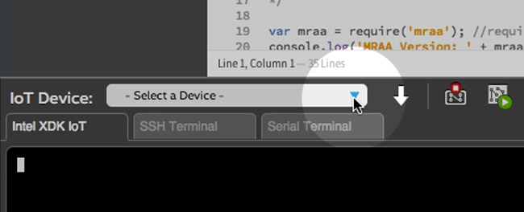
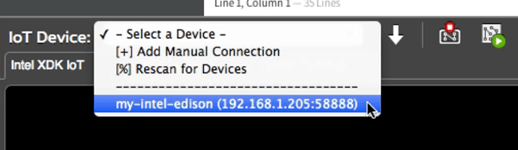
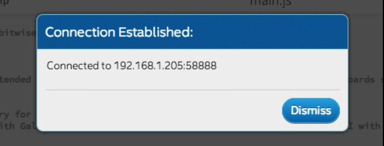

-
In the bottom left corner of the Intel® XDK, click the “IoT Device” drop down list which currently indicates “ - Select a Device - “.

-
Select your target Intel® Edison from the list.
If you will be using Wi-Fi to program your board and there are multiple devices, choose the target based on the device name and IP address.
If you are using Ethernet over USB, select the board with the IP address “192.168.2.15”.

-
A dialog window will appear to input the login credentials of your Intel® Edison.

- Address: IP should be auto-filled from the target device selected in Step 2
- Port: Leave port as “58888”
- User Name: Unless you have changed it, use “root”
- Password: Unless you have changed it, use “intel123”
-
Wait a moment for the connection to be established. A popup window will appear to confirm the connection status.

Problems with Wi-Fi? Need to program while offline?
Refer to the instructions in the XDK troubleshooting guide.
Do not see your device in the “IoT Device” drop down list?
Refer to the instructions in the XDK troubleshooting guide.